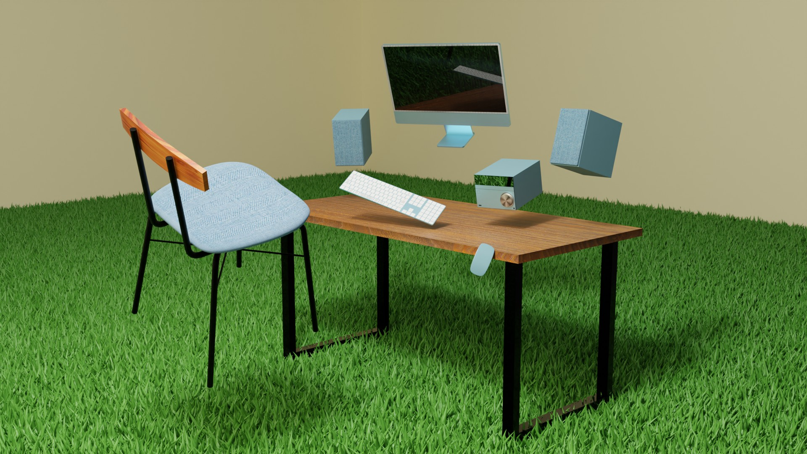

Grassy House
#3DCG
芝生の上を裸足で歩くという心地よいという経験から着想を得て、家の床全面を芝生に変えるというアイデアに基づいてこの作品を制作しました。 さらに、この作品では空間内の物体を浮遊させることにより、重力の存在しない世界を表現しています。この浮遊感は、制約から解放された状態を表現しています。 この制作を通じて、「質感表現」「ライティング技術」「空間把握能力」が向上しました。iMacやキーボード、ミニコンポなどのメタリックな質感は、プリンシプルBSDFとテクスチャを用いて再現しました。
作品詳細
科目名：3DCG演習
制作ツール：Blender
制作期間：2022.07.21 - 2022.08.04
Building Duck
#3DCG
シュールさと可愛らしさの融合をテーマに、アヒルと積み木を独自の視点で組み合わせた作品です。 最後には気だるそうな表情をしたアヒルの顔にズームし、視聴者にクスッと笑ってもらえるような映像に仕上げました。 この作品を通じて、クチバシや足など複雑な曲線部分のモデリング技術が向上しました。
作品詳細
科目名：3DCG演習
制作ツール：Blender, Premire Pro
制作期間：2022.09.01 - 2022.09.29